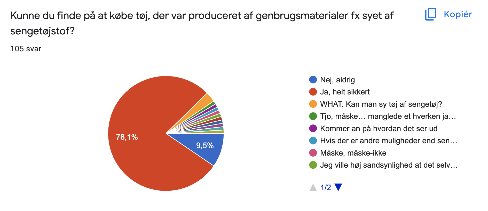
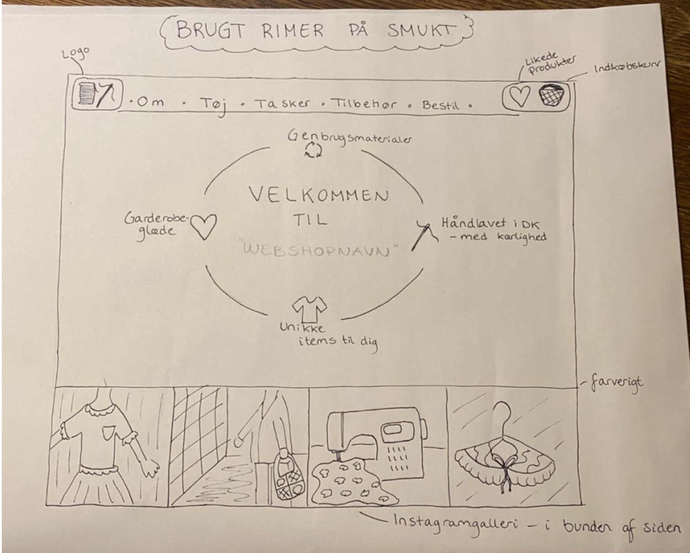
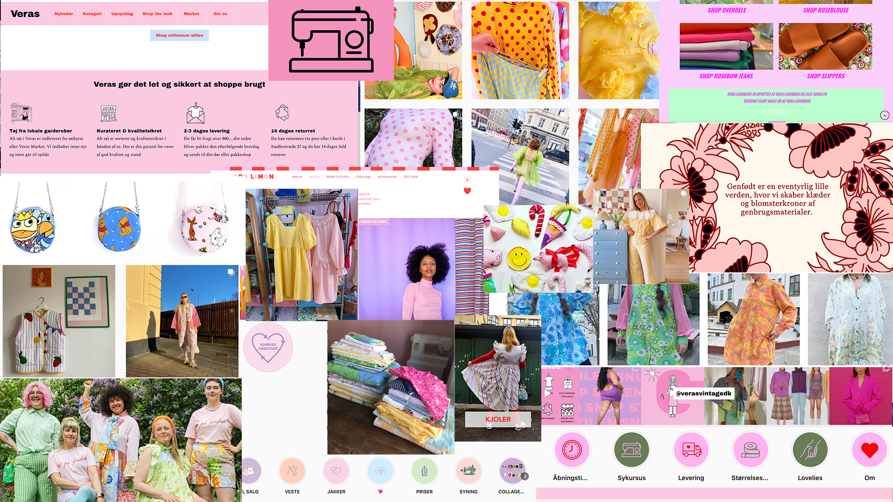

Tema 03 - Grundlæggende UX
Idé & research
Jeg kom hurtigt frem til, at min webshop skulle tage udgangspunkt i genbrug og bæredygtighed, og jeg lavede derfor en kvantitativ undersøgelse i form af et spørgeskema for at undersøge min målgruppe. Resultatet var, at det primært var de yngre kvinder, der syntes om konceptet, så mine idéer og skitser fremadrettet var tiltænkt denne målgruppe.
Med forskellige idé-øvelser som fx ’crazy 8s ’ kom jeg frem til mit første solution sketch, som fik god respons (super vote) i klassen. Særligt idéen med det personlige instagram-galleri i bunden samt genbrugslogoet på forsiden vakte begejstring.
Design & brugertest
Selve designet bærer præg af inspiration fra mit moodboard og min solution sketch. Min prototype er lavet i xD, hvor jeg startede med et style tile med en farvekode med pastelfarver for at skabe et ungt, feminint univers. Alle billederne er taget af tøj, jeg selv har syet, og jeg har brugt mig selv som model for at gøre sitet mere personligt.
Efterfølgende er min prototype testet på mine klassekammerater igennem et five act interview kombineret med en ’tænke højt’-test. Heraf lærte jeg, hvor brugbart det er at lade sit produkt teste på andre mennesker, særligt ift. brugervenlighed.